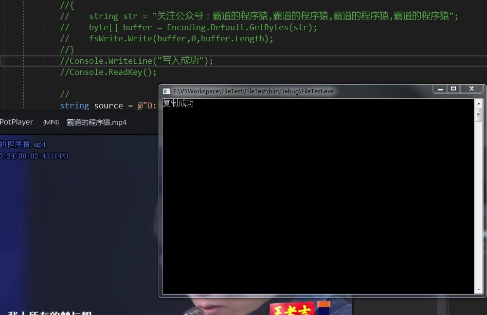

原文出处:本文由博客园博主霸道流氓提供。
原文连接:https://www.cnblogs.com/badaoliumangqizhi/p/11450556.html
原文连接:https://www.cnblogs.com/badaoliumangqizhi/p/11450556.html
场景
C#中FileStream的对比以及使用方法：
https://blog.csdn.net/BADAO_LIUMANG_QIZHI/article/details/100396022
关注公众号
霸道的程序猿
获取编程相关电子书、教程推送与免费下载。
实现
新建控制台程序
在main方法中
//复制源路径
string source = @"D:\音乐迷\音乐迷\mv\消愁-毛不易.mp4";
//复制目的路径
string target = @"C:\Users\Administrator\Desktop\霸道的程序猿.mp4";
CopyFile(source,target);
Console.WriteLine("复制成功");
Console.ReadKey();
然后实现复制视频文件的方法
public static void CopyFile(string source,string target)
{
//创建一个负责读取的流
using (FileStream fsRead = new FileStream(source, FileMode.OpenOrCreate, FileAccess.Read))
{
//创建一个负责写入的流
using (FileStream fdWrite = new FileStream(target,FileMode.OpenOrCreate,FileAccess.Write))
{
// 5 兆的字节数组
byte[] buffer = new byte[1024*1024*5];
//因为文件可能会比较大，所以我们在读取的时候 应该通过一个循环去读取
while (true)
{
//返回本次读取实际读取到的字节数
int r = fsRead.Read(buffer, 0, buffer.Length);
//如果返回一个0 也就意味着什么都没有读取到 即读取完了
if (r == 0)
{
break;
}
fdWrite.Write(buffer,0,r);
}
}
}
}
运行效果
